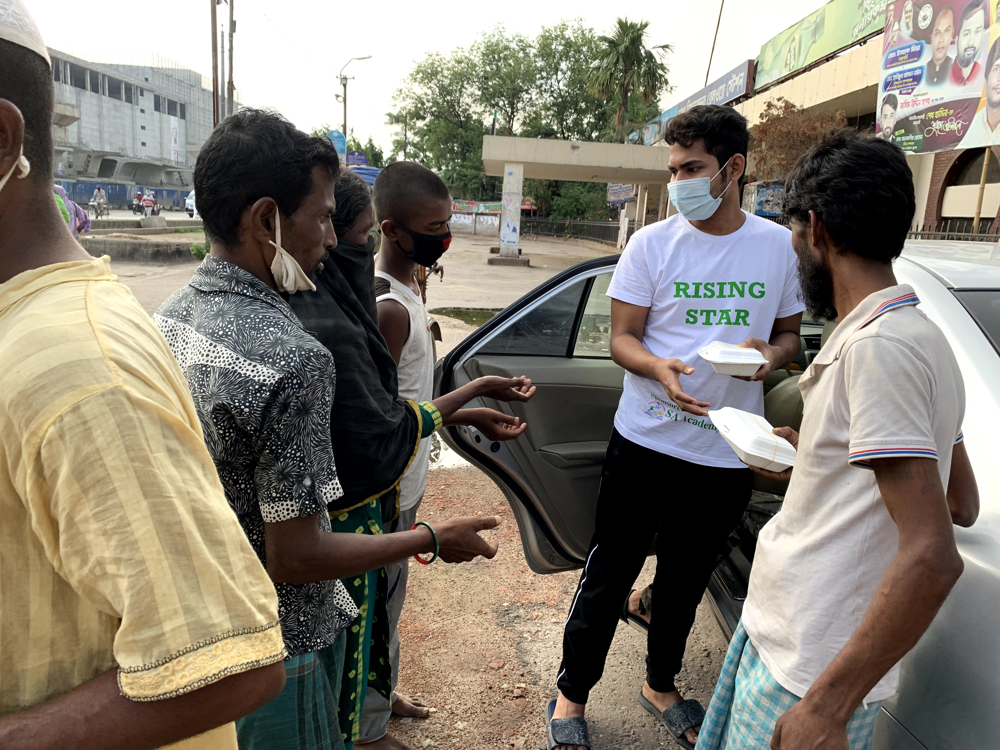
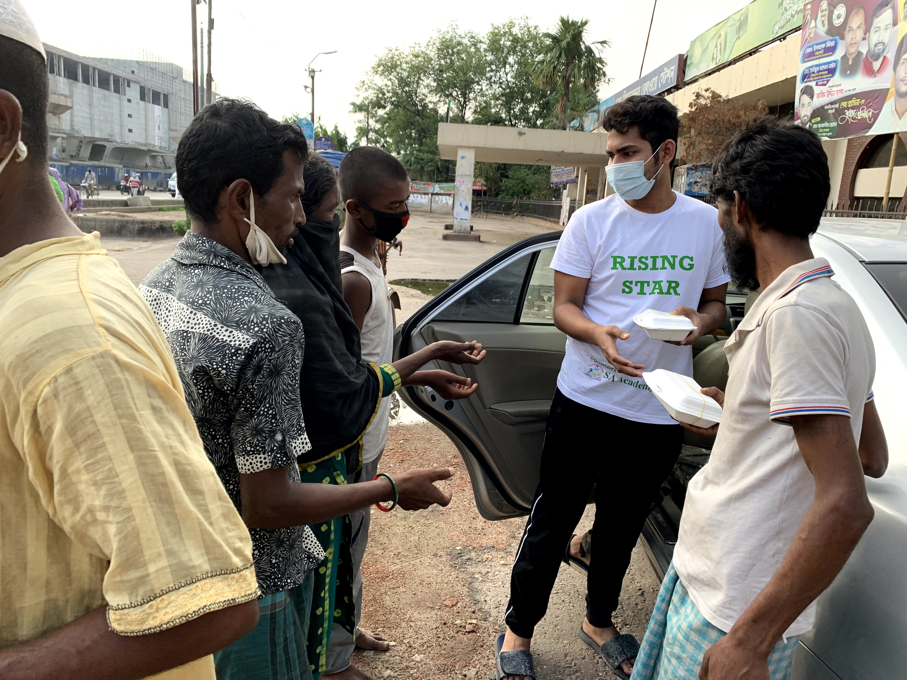
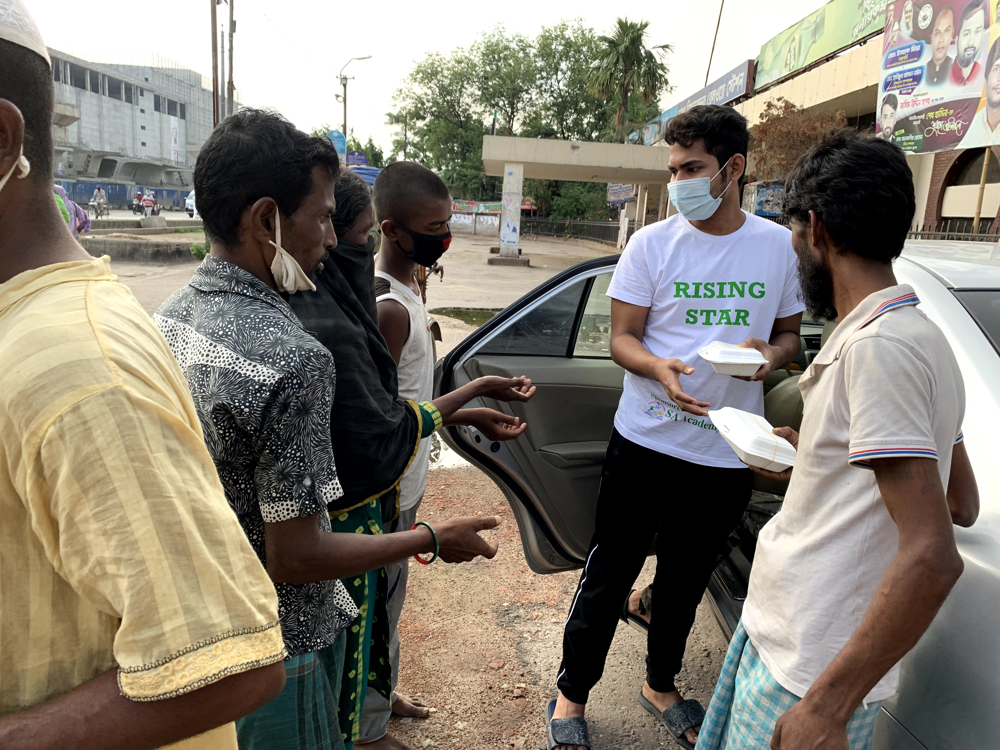

This is an E-commerece website, We sell various products ranging from Groceries to Emergency Medical Appliance Supply. I have been working here for 1.5 years. I could build my networking capacity more strong working here as I have to deal with many retailers and Wholesellers everyday
As I'm an SEO Specialist, I work in different freeelancing websites like, fiverr, upwork, peopleperhour. I have also worked in a Developer farm for 3 Months as an Assistant SEO Expert.
Right now, I am General Secretary of Rising Star Charity Bangaldesh. Started from 2015, our organization have worked in many districts of Bangaldesh during disasters including Covid-19. We have 12 branches all over Bangaldesh. But our donation collection is worldwide. I find inner peace in this work.
